About me
I’m Gavin, a UX researcher and product designer at UIUC. Away from the screen, I photograph landscapes and food, and I cook. All three come down to noticing small details and arranging them so someone else enjoys the result.
Travel & landscape photography
From the coast of Marseille to Paris, London, and New York.
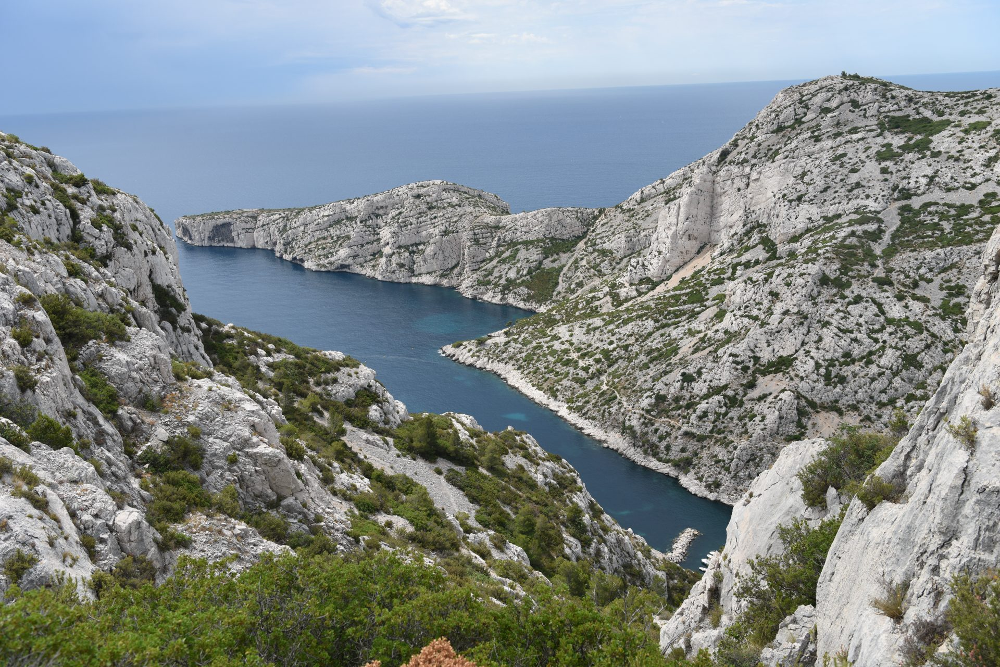
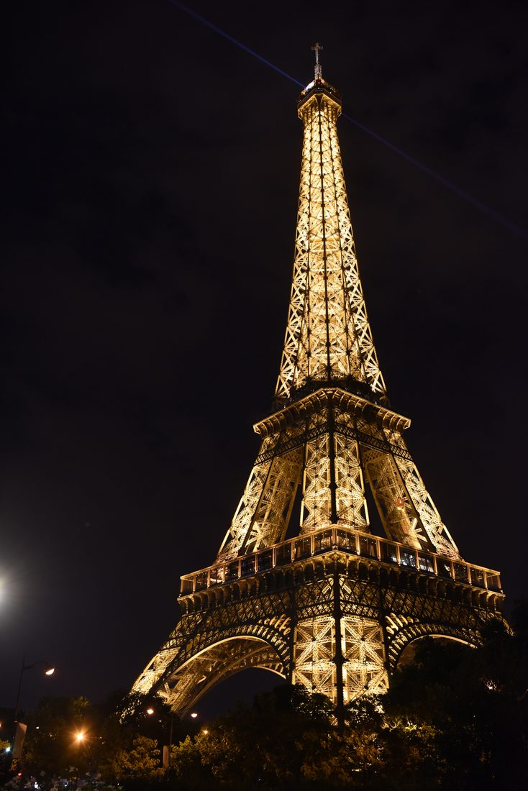
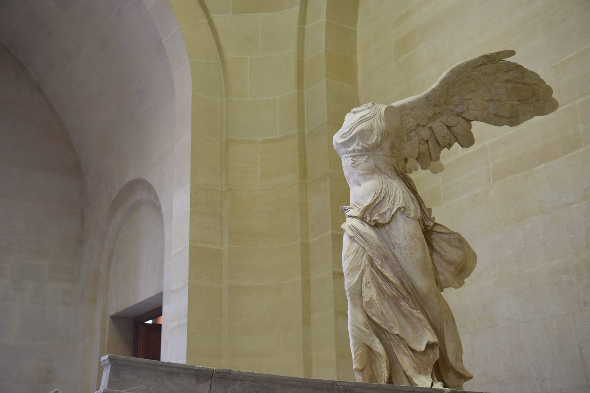
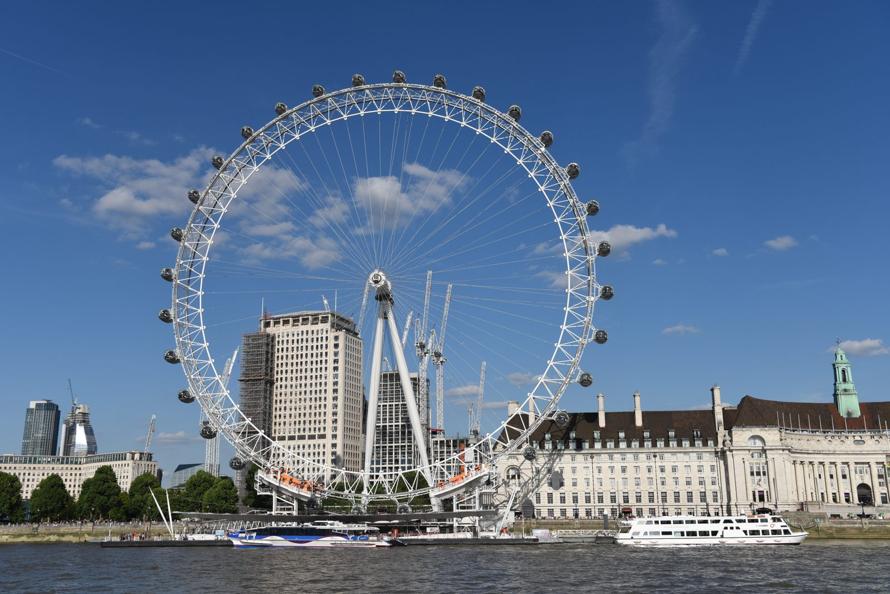
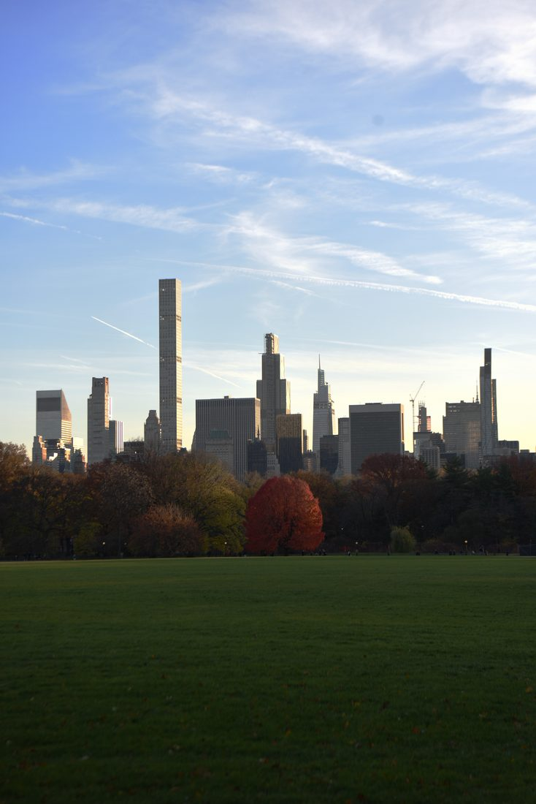
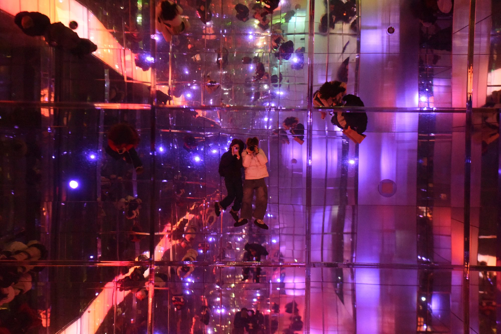
Food photography
Restaurants I’ve photographed in Miami, Chicago, and Champaign.
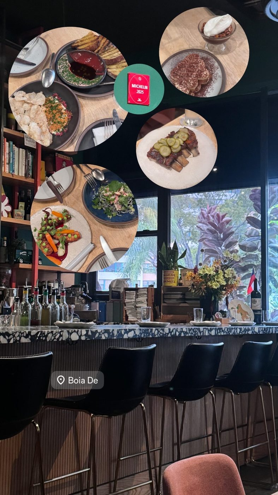
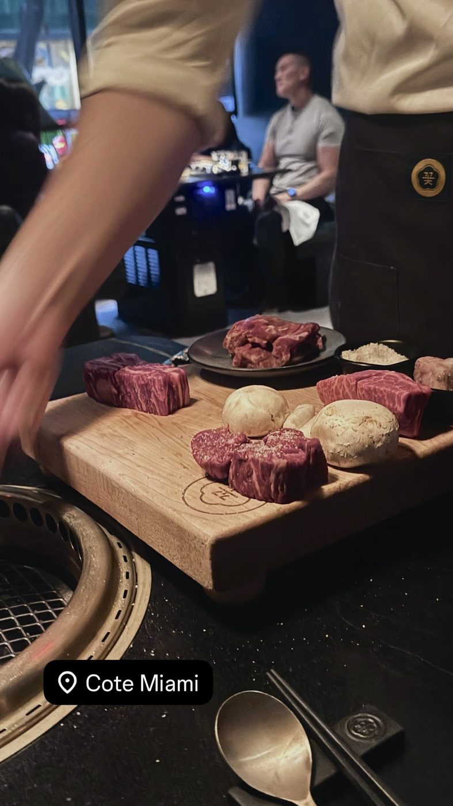
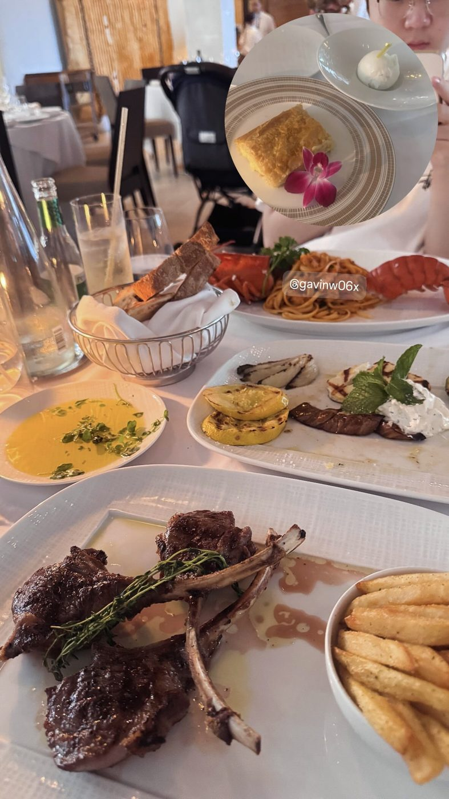
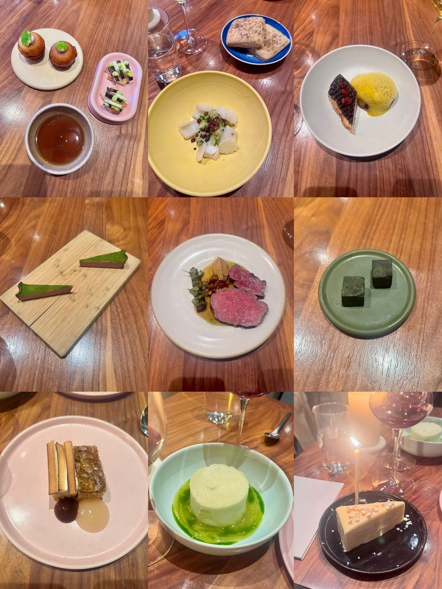
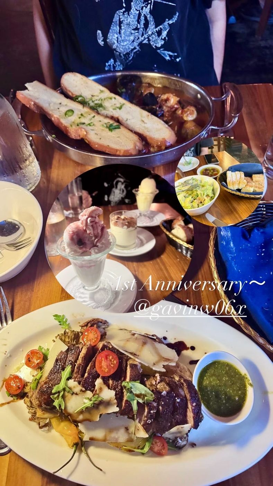
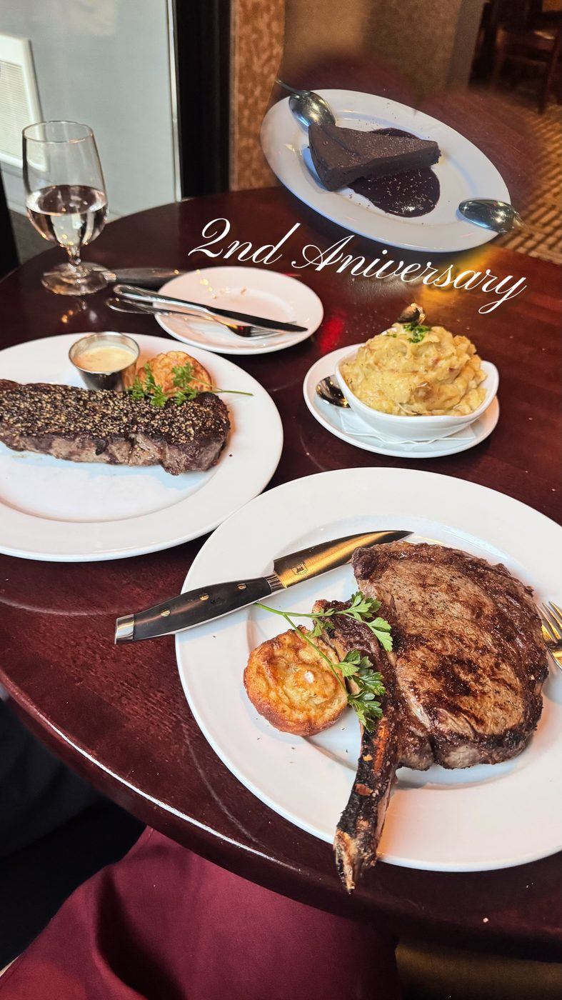
Cooking
What I cook at home, from Chinese family dinners to a good steak.
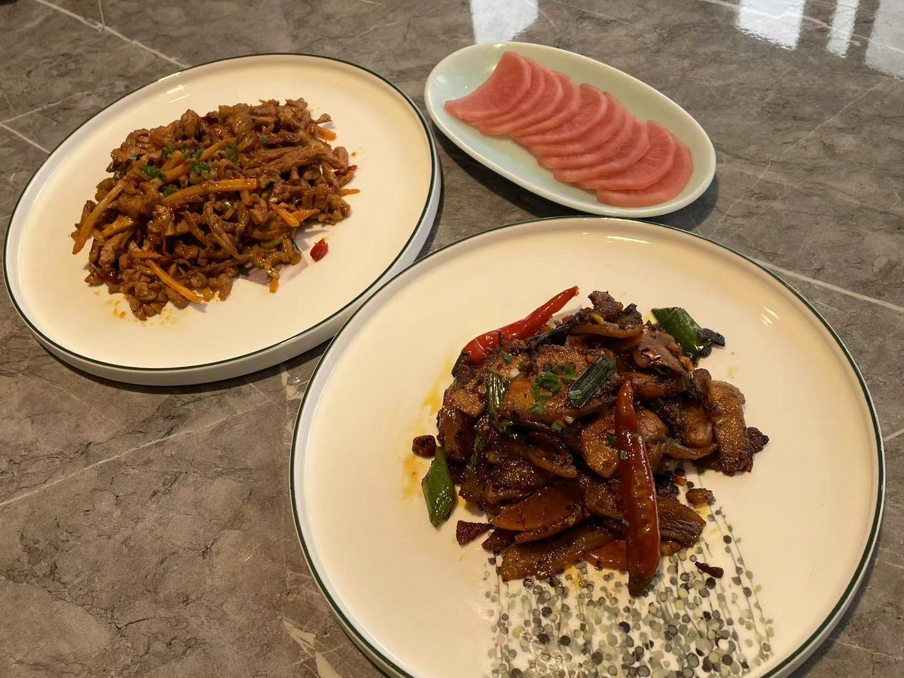
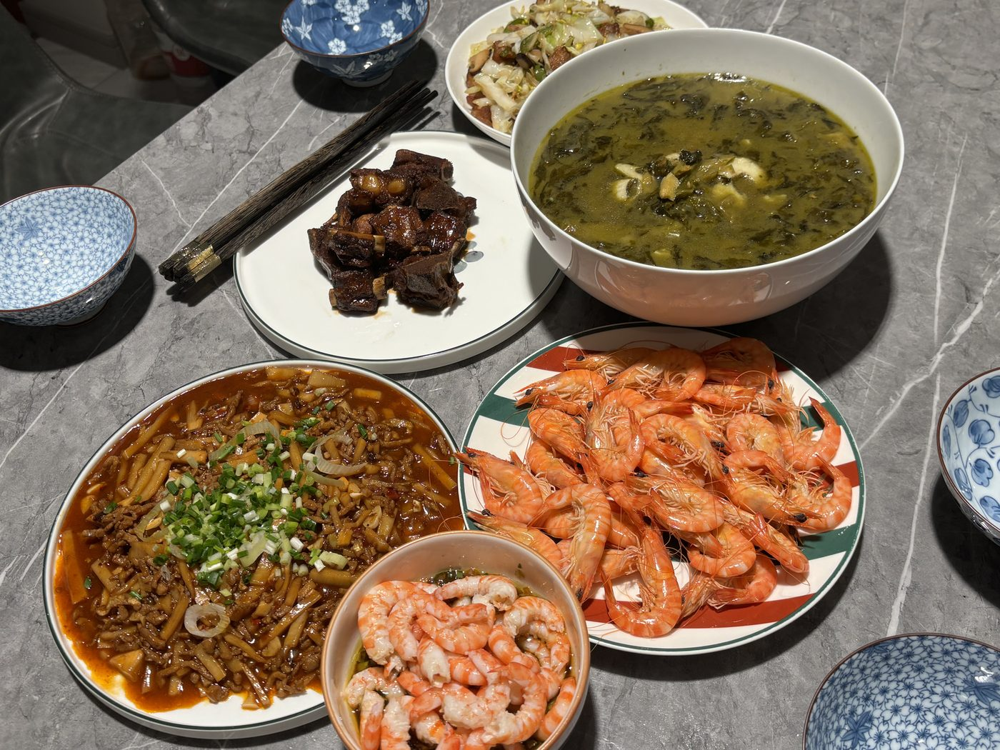
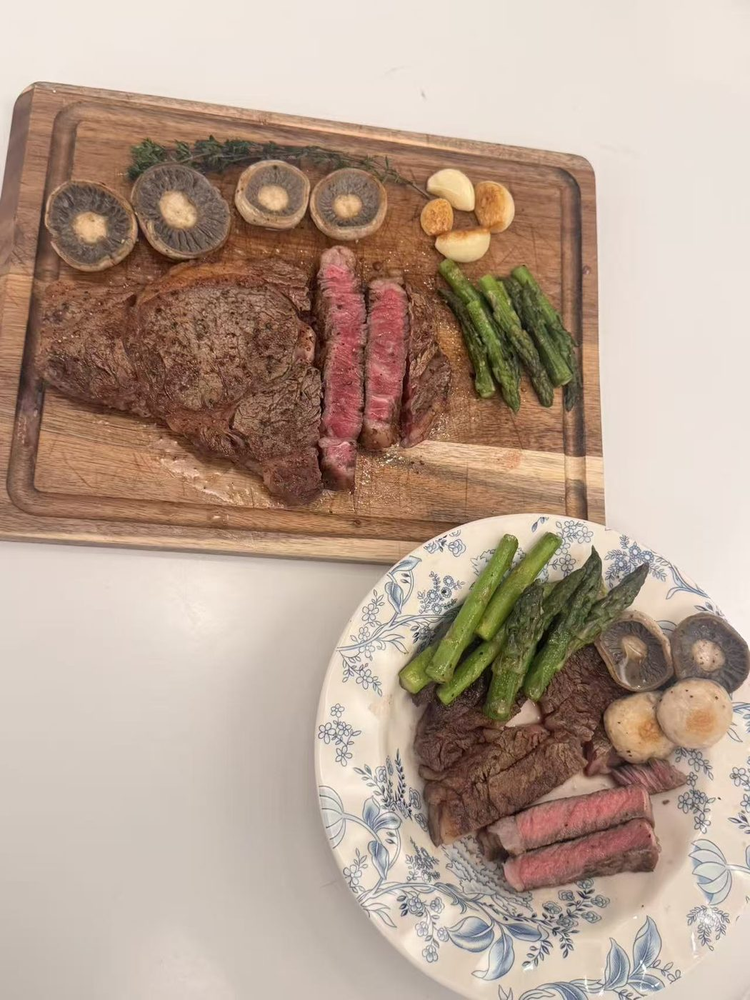
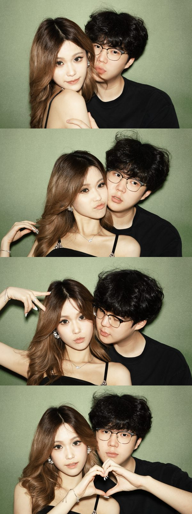
And the person I share most of these trips and meals with.